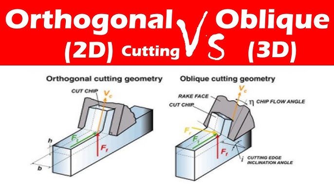
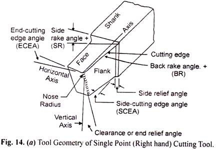
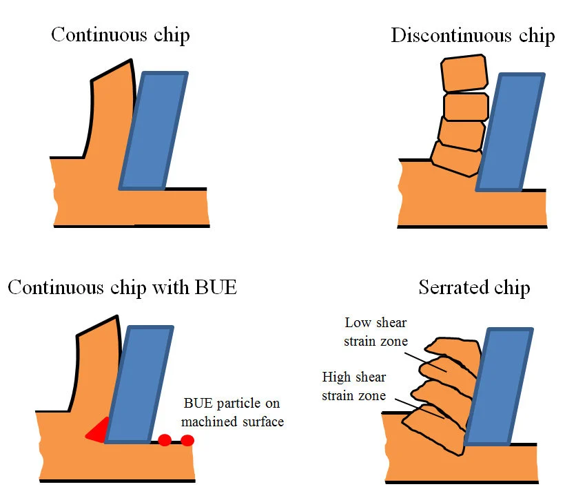
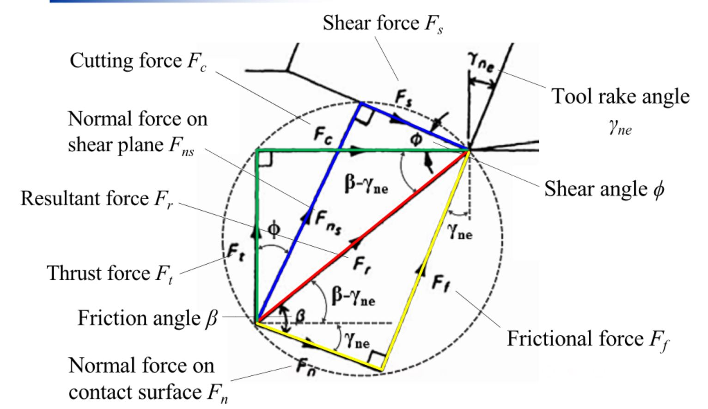
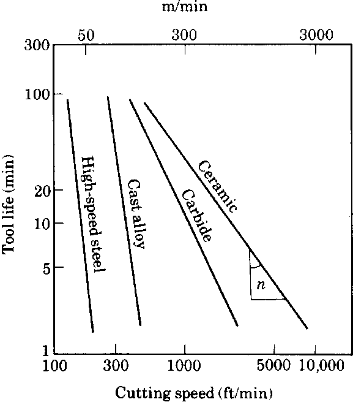
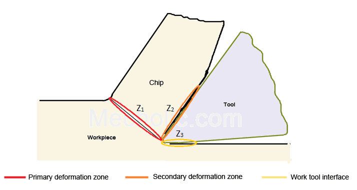
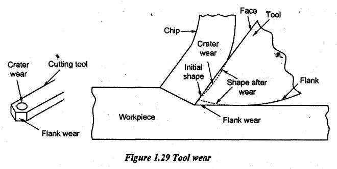
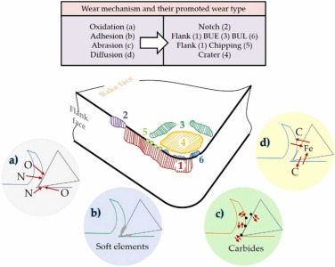

Orthogonal Cutting: Cutting edge perpendicular to tool feed direction. Two-dimensional stress/strain state. Simplest analysis framework; used in theory and practice (lathe turning with perpendicular CCET insert).
Oblique Cutting: Cutting edge inclined to feed direction. Three-dimensional chip flow and force components. Reduces cutting forces and vibration compared to orthogonal; improves surface finish.

Fixed Order (Memorize): Back rake, Side rake, End relief, Side relief, End cutting-edge angle, Side cutting-edge angle, Nose radius.
Back Rake: Angle between tool face and axis of tool shank, measured in plane perpendicular to cutting edge. Positive rake reduces cutting force; negative rake used for ceramic, CBN, hard materials and interrupted cuts.
Side Rake: Angle in side view. Typically positive for ductile metals, zero for brass, negative for hard materials.
Relief Angles (End & Side): Clearance to prevent rubbing on workpiece. Typical values 5–10°. Excessive relief weakens tool; insufficient relief causes friction and wear.
Cutting-Edge Angles: End cutting-edge angle (ECEA) and side cutting-edge angle (SCEA) determine chip control direction. Typically 45–90° for stability.
Nose Radius: Radius at tool tip. Larger radius improves finish and tool strength but reduces corner accuracy. Typical range 0.4–1.6 mm.

Continuous Chip (Ideal): Occurs with ductile materials at high speed, low feed, high rake. Metal flows plastically up the rake face as ribbon without breaking. Produces good surface finish; difficult to handle (entangles).
Discontinuous Chip (Segmented): Occurs with brittle materials (cast iron, ceramics), low speed, high feed. Metal fractures as individual segments. Easy chip removal; poor surface finish.
Continuous Chip with Built-Up Edge (BUE): Occurs at low-to-medium speed with high friction and ductile materials. Layer of work material adheres to rake face, builds up, then breaks off cyclically. Produces poor surface finish (built-up material leaves impressions). Eliminated by increasing speed or reducing friction.

Shear Angle $\phi$: Angle between shear plane and tool motion direction. Higher $\phi$ means thinner chip (larger chip compression), lower shear strain, lower cutting force. Related to chip ratio $r = t/t_c$ (uncut chip thickness / chip thickness).
Merchant Relation (Standard): $2\phi + \beta - \alpha = 90°$. Where $\phi$ = shear angle, $\beta$ = friction angle (= $\arctan \mu$), $\alpha$ = rake angle. Predicts shear angle from tool geometry and friction coefficient.
Chip Ratio ($r$): Ratio of uncut thickness to chip thickness, always $< 1$ in ordinary turning. Relates to shear angle by: $\tan \phi=\frac{r \cos \alpha}{1 - r \sin \alpha}$. Higher $r$ means larger shear angle, lower cutting force.

Form: $VT^n = C$. Where $V$ = cutting speed (m/min), $T$ = tool life (minutes), $n$ = exponent (material and tool dependent), $C$ = constant (cutting speed for 1-minute tool life).
Exponent $n$ Ranges: HSS: 0.08–0.2; Carbide: 0.2–0.4; Ceramic: 0.5–0.7. Smaller $n$ means tool life more sensitive to speed changes (HSS more speed-sensitive than carbide). Doubling speed sharply reduces tool life.
Extended Forms: $VT^n f^y d^x = C'$ accounts for feed ($f$) and depth ($d$). Exponents $x, y$ typically much smaller than $n$ (speed dominates tool life).

Cutting Speed (m/min): $V = \frac{\pi DN}{1000}$. Where $D$ = workpiece diameter (mm), $N$ = spindle speed (rpm). Higher speed reduces cutting time but accelerates tool wear.
Forces in Orthogonal Cutting: Tangential force ($F_c$, parallel to tool feed), Normal force ($F_t$, perpendicular to rake face). Cutting power $P = F_c \cdot V$ (watts, tangential force dominates). Friction coefficient $\mu = \tan \beta = \frac{F_c \sin \alpha + F_t \cos \alpha}{F_c \cos \alpha - F_t \sin \alpha}$.
Force Reduction Techniques: Increase rake angle (reduces force but weakens tool edge). Increase speed (reduces built-up edge, improves chip flow). Use coolant (reduces friction). Decrease feed (reduces overall force but increases tool life requirements).
Heat Sources: Primary shear zone (80–85% of heat); friction at tool-chip interface (10–15%). Total heat $Q = F_c \cdot V \cdot t$ (proportional to power and thickness).
Heat Distribution: Chip carries away ~80% of heat (exits with chip). Tool receives ~10%, workpiece ~5–10%, environment negligible. High-speed cutting: most heat leaves with chip. Low-speed cutting: more heat reaches tool (accelerates wear).
Temperature Rise in Tool: Highest at contact zone (chip-rake face interface). Crater wear initiates away from tip (where temperature is maximum, ~1000°C for steel). Flank wear accelerated by heat conduction from rake face.

Flank Wear (Dominant Mode): Wear on relief/clearance faces. Cause: abrasion by workpiece asperities, chemical reaction, adhesion-removal cycles. Occurs uniformly along flank. VB (flank wear land) 0.3–0.6 mm is typical tool-life criterion. Increased by low speed (more time rubbing), high feed (higher normal stress).
Crater Wear: Wear on rake face, away from cutting edge (not at tip). Cause: diffusion of tool material into chip at high temperature, adhesion. Starts where temperature is maximum ($\approx 500–1000$mm away from edge). Dominant at high speed and high temperature. Primarily affects HSS tools; carbides more resistant due to hardness.

Built-Up Edge (BUE): Not true wear, but workpiece material adhesion. Accumulates at tip, increases cutting force, vibration, and heat. Breaks off cyclically (produces poor finish marks). Suppressed by high speed or coolant (reduces friction).
Notch Wear: Localized wear at depth-of-cut line (stress concentration). Accelerated at low speeds and high feeds. Caused by thermal cycling and stress concentration.
Where: $D$ = workpiece diameter (mm), $N$ = spindle speed (rpm), $V$ = m/min.
Where: $t$ = uncut chip thickness (feed per revolution), $t_c$ = actual chip thickness. Always $r < 1$ in ordinary turning. Higher $r$ indicates thicker undeformed chip (larger shear).
Equivalent form: $\phi = 45° + \frac{\alpha - \beta}{2}$. Where $\phi$ = shear angle, $\alpha$ = rake angle, $\beta$ = friction angle ($\beta = \arctan \mu$).
Relates chip compression directly to shear plane orientation.
Where: $F_c$ = tangential (cutting) force, $F_t$ = normal force perpendicular to rake face.
Where: $V$ = cutting speed (m/min), $T$ = tool life (minutes), $n$ = exponent (typical: HSS 0.08–0.2, carbide 0.2–0.4, ceramic 0.5–0.7), $C$ = cutting speed at 1-min tool life.
Where: $f$ = feed (mm/rev), $d$ = depth of cut (mm). Exponents $x, y$ typically 0.1–0.3 (much smaller than $n$).
Where: $P$ = watts (or hp = P/746), $F_c$ = tangential cutting force (N), $V$ = cutting speed (m/min). Convert $V$ to m/s for SI units.
Where: $t$ = uncut chip thickness (feed). Roughly proportional to cutting power and material removal rate.

| Wear Type | Location | Primary Cause | Severity Factors | Mitigation Strategy |
|---|---|---|---|---|
| Flank Wear | Relief/clearance face (contact with workpiece) | Abrasion by workpiece asperities; adhesion-removal cycles | Low speed (more rubbing time); high feed (normal stress); abrasive workpiece material | Increase speed (reduces time in contact). Use coated tools (hardness, adhesion resistance). Reduce feed. Apply coolant. |
| Crater Wear | Rake face, away from cutting edge (not at tip) | Diffusion of tool atoms into hot chip; chemical reaction at contact zone | High speed (high temperature, accelerates diffusion); high temperature materials (steel > aluminum); absence of crater-resistant coatings | Reduce speed (lowers temperature, slows diffusion). Use carbide or ceramic (higher diffusion resistance than HSS). Apply protective coatings. Use coolant (reduces interface temperature). |
| Built-Up Edge (BUE) | Rake face tip (workpiece material adheres) | Adhesion of plastically deformed workpiece material under high contact stress and temperature | Low-to-medium speed (high friction, high adhering force); high ductility material; high rake angle (encourages sticking) | Increase speed (reduces friction, promotes sliding over adhesion). Use coolant (reduces friction and temperature). Reduce feed. Apply dry cutting or high-speed dry cutting (eliminates coolant interaction). |
| Notch Wear | At depth-of-cut line (edge of chip contact) | Stress concentration from thermal cycling and mechanical stress at tool-workpiece separation point | Thermal cycling (interrupted cuts); high speed with low speed interchanges; high depth of cut | Avoid interrupted cuts if possible. Use stable speed (avoid rapid speed changes). Increase tool nose radius (distributes stress). Use wear-resistant coatings. |
| Chipping / Fracture | Tool nose or edge | Sudden mechanical overload; thermal shock from coolant; interrupted cuts | Excessive feed or depth; vibration; interrupted turning; rapid speed/load changes; tool tip too sharp | Reduce feed/depth incrementally. Ensure machine rigidity (minimize chatter). Avoid sudden coolant application on hot tool (use through-spindle delivery or mist). Use tougher tool grade (sacrifice hardness for fracture resistance). Increase nose radius. |
| Adhesive Wear | Rake face and flank (spotty, micro-scale) | Local welding of tool-workpiece asperities followed by shear removal | Low speed (promotes adhesion over sliding); ductile workpiece material; low friction coefficient | Increase speed (promotes sliding). Use coolant with EP (extreme pressure) additives. Apply hard coatings (TiN, AlTiN reduce adhesion). Use negative rake (reduces contact stress). |
| Diffusive Wear | Rake face (crater wear substrate) | Thermal diffusion of tool atoms into chip matrix at very high temperature ($>900$°C) | High-speed steel at high speed (HSS poor diffusion resistance); high temperature workpiece materials (superalloys, titanium); long cutting times | Switch to carbide or ceramic (10–20× better diffusion resistance). Reduce speed to lower interface temperature. Use coated carbides (diffusion barriers). Reduce tool life requirement (accept higher tool change frequency at high speed). |
| Oxidative Wear | Flank and rake face (surface oxidation layer) | Chemical oxidation of tool material (especially HSS Fe-W-Mo) at elevated temperature in air | High speed (high temperature); HSS tools (less oxidation-resistant); absence of protective atmosphere | Use carbide or ceramic (oxidation-resistant at high temp). Reduce speed. Apply protective coatings. Use dry cutting (eliminates water-induced oxidation). |
| Thermal Shock / Microcracks | Tool nose and tip region | Rapid thermal cycling: hot tool in contact, suddenly cooled by coolant or air exposure | Interrupted cuts (thermal cycling). Sudden coolant application. Rapid speed/load changes. HSS and ceramic (low thermal shock resistance) | Use continuous cutting. Avoid mist/flood coolant interactions (use through-spindle or dry only). Preheat tool in high-speed dry cutting. Use tough carbide grades (sacrifice hardness for toughness). |
| Plastic Deformation / Wear | Tool nose (edge rounding, loss of sharpness) | Tool material yield under combined thermal and mechanical stress at high temperature | High speed + high feed (extreme stress). HSS at high temp (yield point drops significantly). Negative rake (increases stress on tool) | Reduce speed or feed. Use harder tool material (ceramic, cubic boron nitride). Increase tool nose radius (distributes stress). Apply compressive stress coatings (improves hardness). |
Revision Focus Areas (Frequency-Ranked):
1. ASA tool geometry & signature | 2. Merchant theory & shear angle | 3.
Taylor's tool-life equation | 4. Chip formation & BUE | 5. Flank vs
crater wear mechanisms